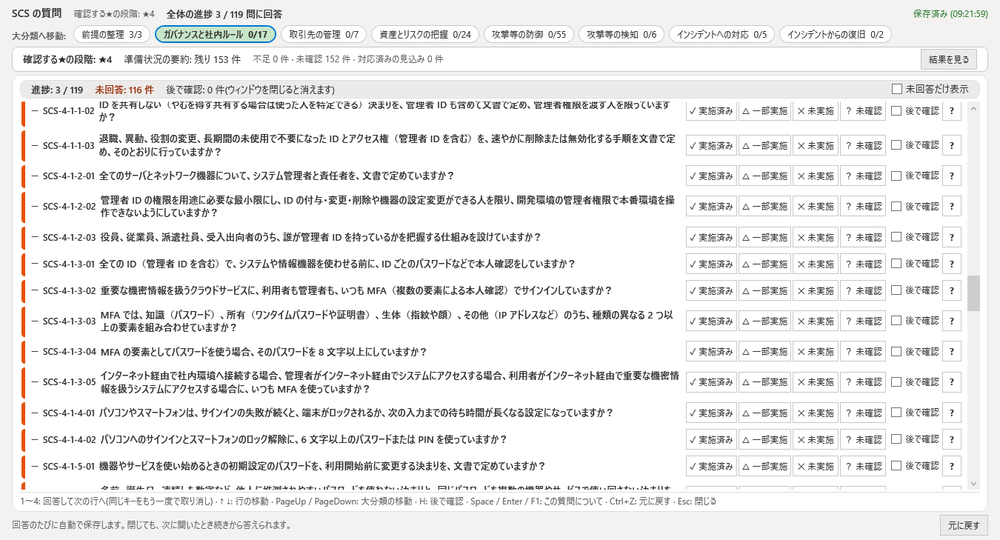
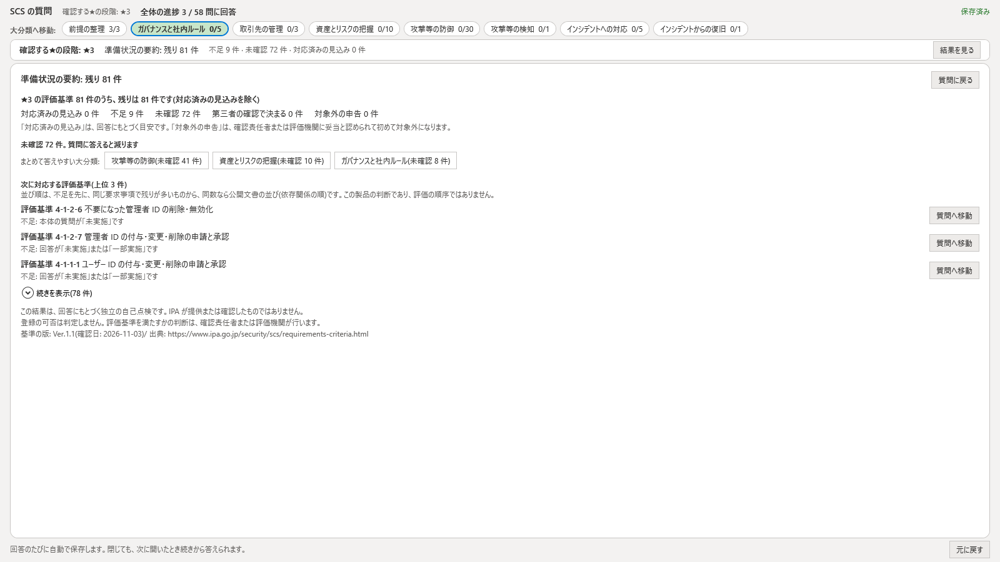
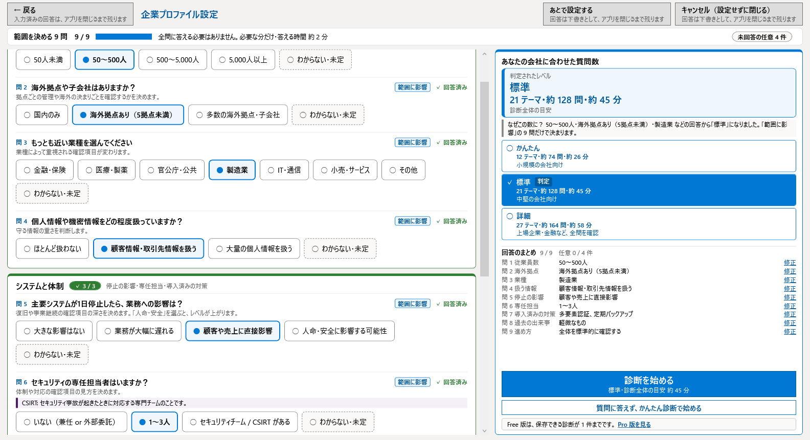
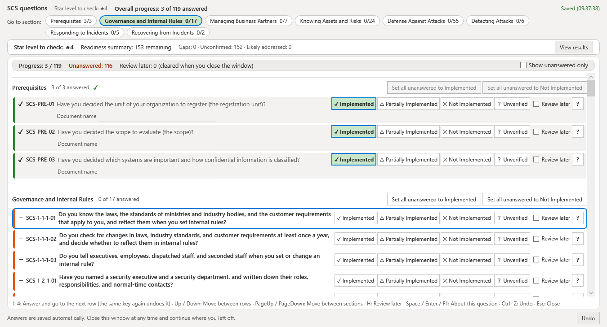

Chapter 2: 診断の作成
開始時の質問に答えて始める方法と答えずに始める方法、言語選択、セッション管理
新しい診断の始め方
セッション選択画面の「診断を開始する」を選ぶと、開始時の質問（企業プロファイル）の画面が開きます。答える時間は約 2 分で、全問に答える必要はありません。
企業プロファイル設定の画面は、開くたびに最大化で表示されます。タイトルバーの「元に戻す」を選ぶと、開いている間だけ通常の大きさに切り替えられます。
開始時の質問に答えて始める
1 画面に「範囲を決める 9 問」（従業員数・海外拠点・業種・扱う情報・停止の影響・専任担当・導入済みの対策・過去の出来事・進め方）が並び、システムの場所や AI の利用などの任意の 4 問は折りたたまれています。回答に合わせて、画面右の「あなたの会社に合わせた質問数」に、判定されたレベルと「N テーマ・約 N 問・約 N 分」の目安が表示されます。レベルは「かんたん」「標準」「詳細」から選べます。「わからない・未定」も選べます。「戻る」「あとで設定する」「キャンセル」を選んでも、回答はアプリを閉じるまで残ります。
質問に答えずに始める
開始時の質問の画面で「未回答のまま始める」を選ぶと、入力済みの回答は使わず、いちばん小さい範囲の「かんたん」で診断が始まります。基本的な状況を先に確認したいときに使えます。
SCS 評価制度の準備状況を確認する（Pro・任意）
セッション選択画面の「診断を開始する」の下にある「SCS 評価制度（★3 / ★4）の準備状況も確認する（任意）」を選ぶと、経済産業省のサプライチェーンセキュリティ対策評価制度（SCS）に向けた準備状況を確認できます。開始時の質問の画面ではなく、「診断を開始する」を選ぶ前に、このセッション選択画面で設定します。この確認の結果は、全体スコアには含まれません。対象は★3 と★4で、「確認する★の段階」から選びます（既定は★3）。Free 版では選択できず、「SCS の準備状況の確認は Pro 版で使えます。」と表示されます。
選んだ診断では、メイン画面の「SCS の質問に答える」で専用の質問画面を開き、評価基準に対応する質問に答えます。回答は自動で保存され、本体の質問に回答済みの項目は引き継がれます。「結果を見る」では、選んだ★の段階について、評価基準の件数のうちの残り件数、不足、未確認、次に対応する評価基準が表示されます。レポート（PDF・HTML）には「SCS の準備状況」の章が加わります。


この結果は、回答にもとづく独立の自己点検です。IPA が提供または確認したものではありません。登録の可否は判定しません。評価基準を満たすかの判断は、確認責任者または評価機関が行います。
言語の選択
質問文と回答選択肢の表示言語は、設定画面で選びます。診断の作成時は、設定の言語が使われます。現在、日本語と英語に対応しています。
セッション管理
SecureNavigator では、診断の進捗をセッションとして保存できます。
| エディション | 保存可能なセッション数 |
|---|---|
| Free | 1 件 |
| Pro | 3 件 |
新しいセッションを作成すると、既存のセッションは保持されたまま、新しい診断が開始されます。保存数の上限に達した場合は、既存のセッションを削除してから新しい診断を作成する必要があります。
セッションはアプリを閉じても保存されます。次回起動時にセッション選択画面から前回の続きを再開できます。

Chapter 2: Creating an Assessment
Starting with or without the initial questions, language selection, session management
Starting a New Assessment
Select "Start Assessment" on the session selection screen to open the initial questions (company profile). They take about 2 minutes, and you do not have to answer all of them.
The company profile setup opens maximized every time. Select the restore button on the title bar to switch to the normal size while it is open.
Start by Answering the Initial Questions
The 9 questions that set the scope (number of employees, overseas sites, industry, information handled, impact of an outage, dedicated security staff, measures in place, past incidents, and how to proceed) are shown on one screen, and 4 optional questions (such as where your systems run and AI use) are collapsed. As you answer, the "Number of questions for your company" panel on the right shows the level from your answers and an estimate of "N themes, about N questions, about N min". Choose from Quick, Standard, or Detailed. "Not sure / undecided" is also available. Your answers are kept until you close the app, even if you select Back, Set up later, or Cancel.
Start Without Answering
Select "Start without answers" on the initial questions screen to start with Quick, the smallest scope. Any answers you have entered are not used. This is useful when you want to check the basics first.
Check SCS Readiness (Pro, optional)
Select "Also check readiness for the SCS rating scheme (★3 / ★4) (optional)", below "Start Assessment" on the session selection screen, to check your readiness for the supply chain security rating scheme (SCS) of Japan's Ministry of Economy, Trade and Industry. Set it on this screen before you select "Start Assessment", not on the initial questions screen. This check is not included in the overall score. It covers ★3 and ★4: choose one under "Star level to check" (the default is ★3). In the Free edition, you cannot select it, and the screen shows "Checking SCS readiness is available in the Pro edition."
For an assessment with this option, select "Answer SCS questions" on the main screen to open the dedicated question screen and answer the questions linked to the criteria. Answers are saved automatically, and items already answered in the main questions are carried over. "View results" shows, for the star level you chose, how many of the criteria remain, the gaps, the unconfirmed criteria, and the criteria to work on next. The report (PDF and HTML) gains an "SCS readiness" chapter.

This result is an independent self-check based on your answers. IPA did not provide or review it. It does not decide whether you can be registered. The verifier or evaluation body decides whether the criteria are met.
Language Selection
You choose the display language for questions and answer options in the Settings screen. When you create an assessment, the language set in Settings is used. Currently, Japanese and English are supported.
Session Management
SecureNavigator saves assessment progress as sessions.
| Edition | Maximum Saved Sessions |
|---|---|
| Free | 1 |
| Pro | 3 |
Creating a new session keeps existing sessions intact and starts a fresh assessment. If you reach the session limit, you must delete an existing session before creating a new one.
Sessions are preserved when you close the application. You can resume your previous assessment from the session selection screen on the next launch.